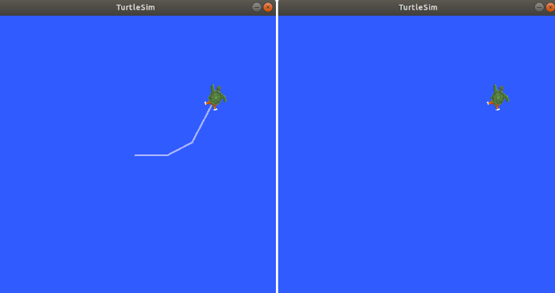

理解 ROS2 services
目录
背景
Service 是 ROS 图中 nodes 的另一种通信方法。Service 基于呼叫和响应模型（call-and-response model），而不是 topics 的发布者-订阅者模型（publisher-subscriber model）。虽然 topics 允许 nodes 订阅数据流并获得持续更新，但 services 只在 client 特别调用它们时才提供数据。


前提条件
1. 设置
启动两个 turtlesim nodes —— /turtlesim 和 /teleop_turtle。
打开一个终端并输入：
ros2 run turtlesim turtlesim_node
再打开另一个终端并输入：
ros2 run turtlesim turtle_teleop_key
2. ros2 service list
在新的终端中运行 ros2 service list 命令将返回系统中当前活动的所有 services 的列表:
> ros2 service list
/clear
/kill
/reset
/spawn
/teleop_turtle/describe_parameters
/teleop_turtle/get_parameter_types
/teleop_turtle/get_parameters
/teleop_turtle/list_parameters
/teleop_turtle/set_parameters
/teleop_turtle/set_parameters_atomically
/turtle1/set_pen
/turtle1/teleport_absolute
/turtle1/teleport_relative
/turtlesim/describe_parameters
/turtlesim/get_parameter_types
/turtlesim/get_parameters
/turtlesim/list_parameters
/turtlesim/set_parameters
/turtlesim/set_parameters_atomically
您将看到这两个 nodes（/turtlesim 和 /teleop_turtle）都有相同的六个 services，它们的名称中都有 parameters。几乎 ROS2 中的每个 nodes 都有这些基础设施 services（也就是说，这 6 个 services 是 nodes 父类中定义的 6 个方法？猜测），而这些 services 的 parameters 是建立在这些 services 之上的。在下一个教程中将会有更多关于 parameters 的内容。在本教程中，parameter services 将从讨论中省略。
到目前为止，让我们将目光集中再 turtlesim 定义的 services 上 —— /clear、/kill、/reset、/spawn、/turtle1/set_pen、/turtle1/teleport_absolute 和 /turtle1/teleport_relative。您可能还记得在 介绍 turtlesim 和 rqt 教程中使用 rqt 与其中一些服务进行的交互的细节。
3. ros2 service type
Services 的类型信息描述如何构造 services 的请求和响应数据的类型。Services 类型的定义类似于topics 的类型，但 services 类型有两个部分: 一个用于描述请求的消息，另一个用于描述响应的消息。
想要查到 services 的类型信息，请使用命令：
ros2 service type <service_name>
让我们以 turtlesim 的 /clear service 为例，打开新的终端，输入下面命令：
> ros2 service type /clear
std_srvs/srv/Empty
std_srvs/srv/Empty 类型意味着 service 调用在发出请求时不发送数据，在接收响应时不接收数据。
3.1. ros2 service list -t
同时查看所有活动 services 的类型，可以使用选项 --show-types，它的简化形式是 -t，追加在 ros2 service list 命令后面：
> ros2 service list -t
/clear [std_srvs/srv/Empty]
/kill [turtlesim/srv/Kill]
/reset [std_srvs/srv/Empty]
/spawn [turtlesim/srv/Spawn]
/teleop_turtle/describe_parameters [rcl_interfaces/srv/DescribeParameters]
/teleop_turtle/get_parameter_types [rcl_interfaces/srv/GetParameterTypes]
/teleop_turtle/get_parameters [rcl_interfaces/srv/GetParameters]
/teleop_turtle/list_parameters [rcl_interfaces/srv/ListParameters]
/teleop_turtle/set_parameters [rcl_interfaces/srv/SetParameters]
/teleop_turtle/set_parameters_atomically [rcl_interfaces/srv/SetParametersAtomically]
/turtle1/set_pen [turtlesim/srv/SetPen]
/turtle1/teleport_absolute [turtlesim/srv/TeleportAbsolute]
/turtle1/teleport_relative [turtlesim/srv/TeleportRelative]
/turtlesim/describe_parameters [rcl_interfaces/srv/DescribeParameters]
/turtlesim/get_parameter_types [rcl_interfaces/srv/GetParameterTypes]
/turtlesim/get_parameters [rcl_interfaces/srv/GetParameters]
/turtlesim/list_parameters [rcl_interfaces/srv/ListParameters]
/turtlesim/set_parameters [rcl_interfaces/srv/SetParameters]
/turtlesim/set_parameters_atomically [rcl_interfaces/srv/SetParametersAtomically]
4. ros2 service find
如果你想要找到指定类型的所有 services，你可以使用下面命令：
ros2 service find <type_name>
例如，找到所有 std_srvs/srv/Empty 类型的 services 列表：
> ros2 service find std_srvs/srv/Empty
/clear
/reset
5. ros2 interface show
你可以在命令行中调用某个 service，但首先你需要知道某个 service 的请求参数的格式：
ros2 interface show <type_name>
例如，我们想要知道 /clear service 的类型 std_srvs/srv/Empty 的请求数据的格式：
> ros2 interface show std_srvs/srv/Empty
---
--- 用于分割 service 的请求数据结构（--- 之上）和响应数据结构（--- 之下）。但是就如你早些时候了解到的，std_srvs/srv/Empty 类型表示不发送任何数据也不接收任何数据。所以自然地，它们的数据结构都是空的。
在让我们查看以下像 /spawn service 那样的类型，需要发送和接收什么样的数据结构。从命令 ros2 service list -t 中我们了解到 /spawn service 的类型是 turtlesim/srv/Spawn。
执行命令：
> ros2 interface show turtlesim/srv/Spawn
float32 x
float32 y
float32 theta
string name # Optional. A unique name will be created and returned if this is empty
---
string name
--- 之上的信息告诉我们如果想要调用 /spawn service 需要传入 x、y 和 theta 三个参数确定海龟出现的位置，还有一个 name 参数是可选的，可以不传。
在这种情况下，--- 之下的信息不是您需要知道的，但是它可以帮助您理解从调用得到的响应的数据类型。
6. ros2 service call
现在您已经知道了什么是 service 的类型，如何查找 services 的类型，以及如何查找该类型的参数的结构，您可以使用以下命令调用 service:
ros2 service call <service_name> <service_type> <arguments>
参数 <arguments> 部分是可选的。例如，大家已经知道 std_srvs/srv/Empty 类型的 service 不需要任何参数：
ros2 service call /clear std_srvs/srv/Empty
这个命令可以清除龟龟画的任何线：

现在让我们通过调用 /spawn 和输入参数来产生一个新的海龟。命令行服务调用中的输入 <arguments> 需要使用 YAML 语法。
输入下面命令：
> ros2 service call /spawn turtlesim/srv/Spawn "{x: 2, y: 2, theta: 0.2, name: ''}"
requester: making request: turtlesim.srv.Spawn_Request(x=2.0, y=2.0, theta=0.2, name='')
response:
turtlesim.srv.Spawn_Response(name='turtle2')
这时 turtlesim 窗口会更新并产生新的海龟：

小结
Nodes 可以使用 ROS2 中的 services 进行通信。Service 是一种请求/响应模式，Client 向提供 services 的 node 发出请求，service 处理请求并生成响应。
您通常不希望使用 service 进行连续调用; Topics 或者 actions 更适合。
在本教程中，您使用命令行工具来识别、详细说明和调用 services。